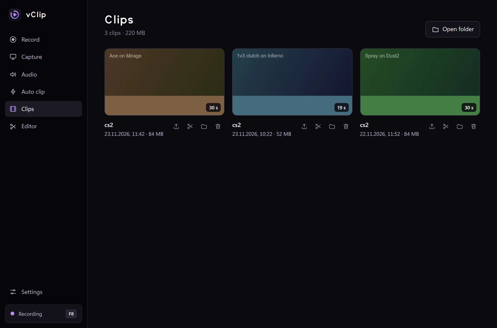

Saving never stalls your game
vClip captures the game window, encodes it on the GPU and keeps the video in memory already compressed. A clip is written in a background thread, so your frame rate stays where it was. On AMD cards it talks to the encoder directly, other GPUs go through ffmpeg.
It attaches to your game by itself when it starts, and sits in the tray the rest of the time.
